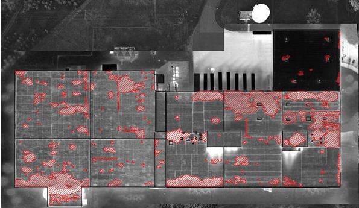
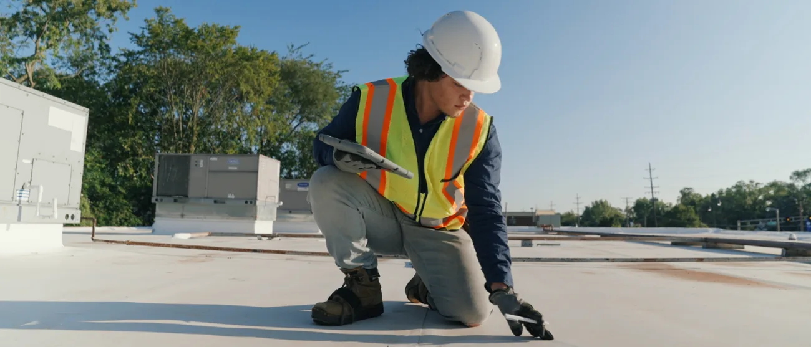
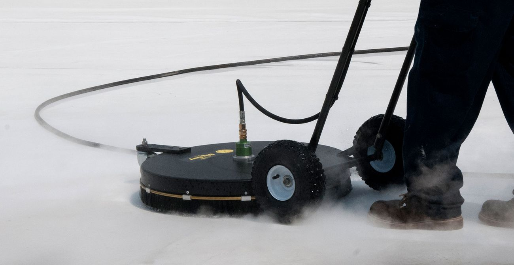
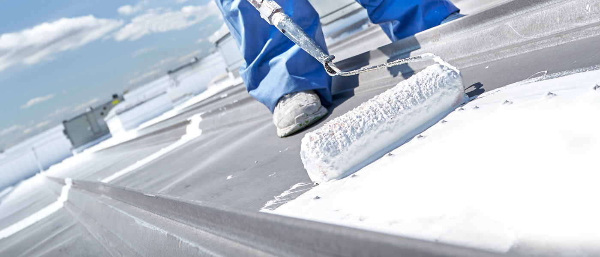
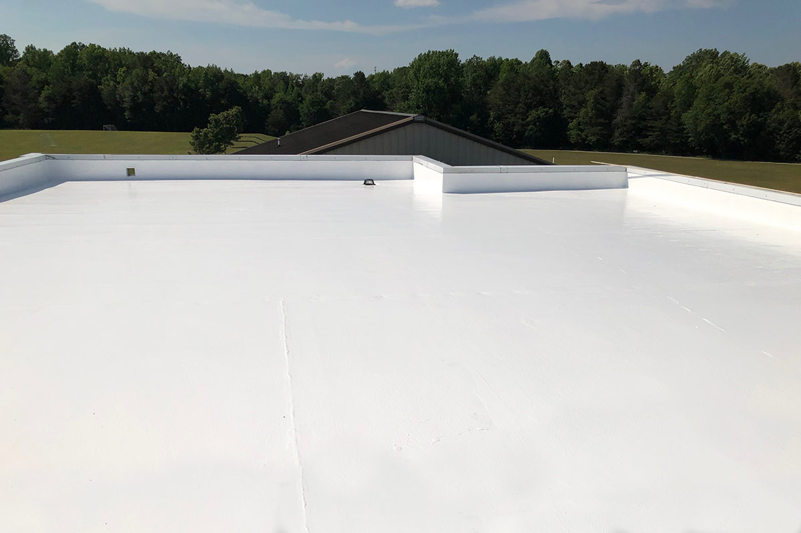

Our Roof Restoration Process
Six steps, 5–7 days on site, and you know the price before anyone opens a bucket.
How We Restore Your Roof
By the end of this page you will know exactly what happens on your roof, who is standing on it, what we are checking for, and where the price comes from. Read it before you accept any contractor's quote — including ours.

Initial Assessment & Aerial Scan
We measure your roof from aerial imagery and send back preliminary pricing, usually within the hour. Nobody sets foot on the building, nobody has to meet us on site, and you get a real number before committing to anything.
- Free aerial roof scan
- Initial condition assessment
- Preliminary cost estimate

On-Site Inspection
Once the preliminary number works for you, technicians walk the roof. This is the step that decides whether restoration is right at all: an infrared scan after sundown shows wet insulation as glowing patches. If too much of your roof is saturated, we will tell you to replace it rather than coat it.
- Seams and penetrations inspection
- Fastener and problem area check
- Infrared scan for wet insulation
- Complete roof condition report
Detailed Quote & Approval
You get a line-by-line quote: square footage, coating system, mil thickness, warranty term, and any repairs needed first. The number you sign is the number you are invoiced. Then we agree access, parking, working hours and how we stay clear of your tenants.
- Itemized cost breakdown
- No hidden fees or surprises
- Pre-construction planning
- Schedule coordination

Cleaning & Preparation
This is the step cheap contractors skip, and it is the step that decides whether your coating lasts twenty years or two. Silicone will not bond to dirt, chalk or grease. We wash or broom the whole surface, prep every seam and penetration, and wait for it to dry completely — even when that costs us a day.
- Power washing or brooming
- Debris and contaminant removal
- Seam and penetration prep
- Complete roof drying

Roof Coating Application
Coating goes on to the manufacturer's specification, and crews check depth with a wet mil gauge as they spray. Thickness is not a detail — it is what sets your warranty at 10, 15 or 20 years. The roof then cures for a day or two.
- Manufacturer-spec application
- Wet mill gauge monitoring
- Proper thickness verification
- 1-2 day curing period

Final Inspection & Walkthrough
We walk the finished roof with you and hand over before-and-after photos, the signed warranty paperwork, and a maintenance schedule. Keep to that schedule and your warranty stays valid for its full term.
- Complete quality verification
- Before-and-after documentation
- Warranty documentation
- Long-term maintenance plan
Project Timeline
Most roofs are done in 5-7 days from first wash to final walkthrough. Rain resets the clock, because coating a damp roof is exactly how coatings fail — so we wait rather than rush, and you hear from us either way.
Start With the Free Aerial Scan
Step one costs nothing and commits you to nothing. You will have preliminary pricing for your roof in about 60 minutes.
Schedule Your Free Assessment